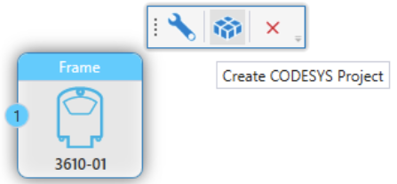
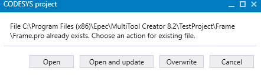

Updating MultiTool Creator Configurations to CODESYS Project
|

|
In some cases, unused variables and structures can exist in a code template even if they are not in use. MultiTool Creator does not override all configurations that are done in a previous System Export. For example, if a record index is replaced with another one, MultiTool Creator will not override the original index.
|
MultiTool Creator configurations are imported to CODESYS when a new project is created with Create CODESYS Project (Create CODESYS project). At the project development phase, MultiTool Creator and CODESYS projects are used in parallel - changes to the CODESYS project might need changes to the MultiTool Creator project first, or vice versa. However, MultiTool Creator configuration updates can be easily exported and imported into CODESYS project.
To update the existing project,
1. Make the needed changes in MultiTool Creator
2. Save changes from File menu > Save Project or with CTRL+S
3. To export the changes, select Project > System Export from the menu (System Export)
The following sections describe needed actions in CODESYS 2.3 and 3.5. As an alternative, MultiTool's Network Editor can be used, which is also described below.
CODESYS 2.3
1. Open the CODESYS 2.3 project to be updated always from its folder location by double-clicking the .pro file. (Selecting File > Open in CODESYS makes the import macro dysfunctional)
2. Select Edit > Macros > Import MultiTool Creator. This function imports configurations and the libraries to CODESYS.
3. Select Project > Clean All.
4. Click Project > Build All.
CODESYS 3.5
1. Open an existing CODESYS 3.5 project.
2. Select Tools > Scripting > Execute Script File
3. A browse dialog opens. Browse to the project folder > exported device folder > select a script project_update.py
4. Select Build > Clean All.
5. Click Build > Build All.
Network Editor
To update the CODESYS project directly from MultiTool Creator:
1. Select the device and press  icon from the hover menu.
icon from the hover menu.
2. Select Create CODESYS Project

3. Select Open and update

4. Click Project > Build All.
Epec Oy reserves all rights for improvements without prior notice.
Source file topic200038.htm
Last updated 25-Jun-2025